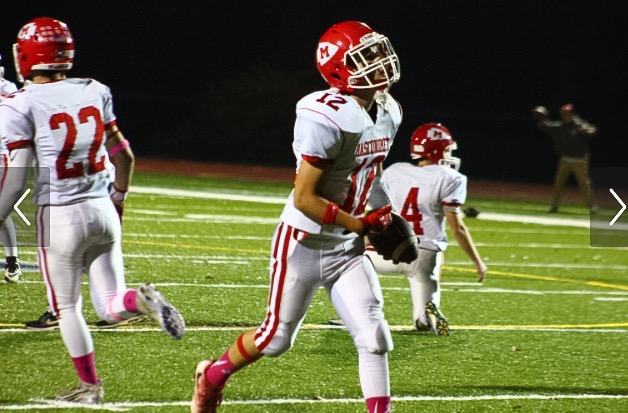
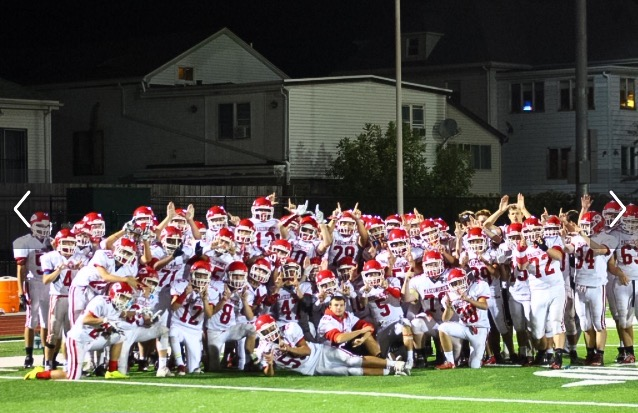
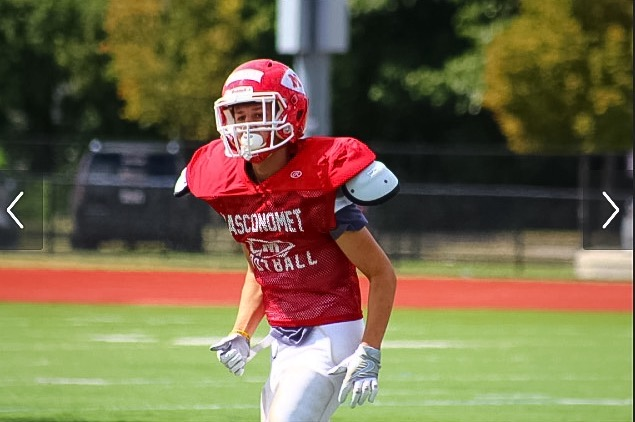

*Justin Bogart*
Football
Watching
Growing up I loved to watch football with my dad. I would pretty much dedicate my Sundays to watching football, especially the Patriots. I would always help my dad pick the games for every week and would make it a competition. The Patriots are my favorite team to watch because every game they show that playing the full 60 minutes of the game is important. We saw this last year in Super Bowl 51 when they pulled off the greatest comeback in American sports by erasing a 28-3 deficit against the Falcons to win the Lombardi trophy by the score of 34-28. My favorite player to watch is without a doubt, Tom Brady. I think he’s a great role model not only in football but in life itself. He proved everyone who doubted him coming out of college wrong by working hard and never giving up on his ultimate goal. He was a big reason why I started watching and eventually playing football.
Playing
Playing football was one of the best experiences in my life. I started playing when I was in the 5th grade. My dad and one of my best friends at the time convinced me to play because they said it’s a great way to meet new people and get involved with kids my age. They were right too, football help me meet a lot of the people that I'm still friends with today. Dressing up every Friday night in high school was a great experience.



Home Page
Next Page